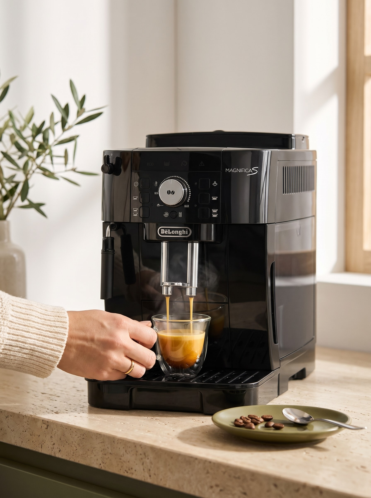
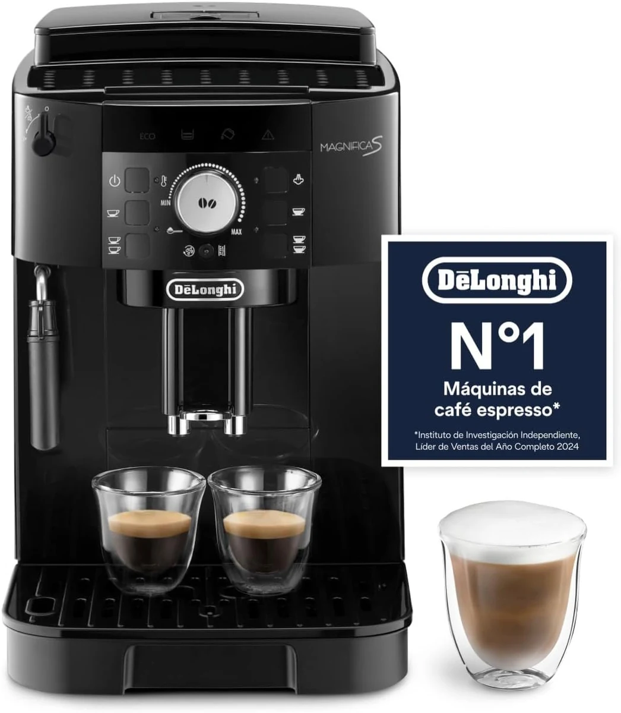

café de oficina™
ANTES
9:00
tibio
aguado
gusto a reunión
Nivel de café: 2/10

DESPUÉS
1
Molés el grano
2
Apretás un botón
3
Espresso con crema
40
s
Nivel de café: 2/10

Café en tu Casa
cafe-en-tu-casa.vercel.app